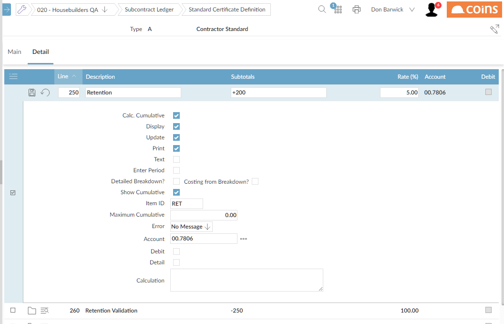

Example of a Certificate Definition - Percentage Line
Suppose retention is calculated as 5% of the Total Cost amount. The Retention line looks like this:

Note that:
- The retention calculation is based on the Total Cost line (line 200), so the Subtotals line is +200.
- The user is to be able to override the retention, so the Update field is ed.
- Retention is to be held in a retention account, so the code for that General Ledger account is entered in the Account field.
To display values such as retention as negative values, create a display line that subtracts the retention line from a blank line.